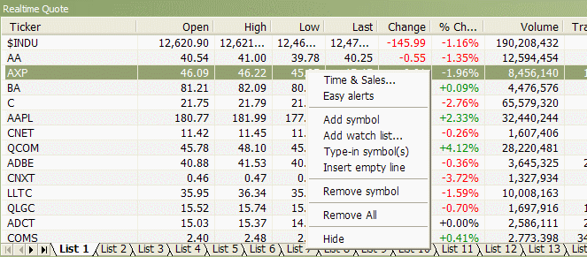

Time & Sales
Opens Time & Sales window that provides
information about every bid, ask and trade streaming from the market.
Easy Alerts
Opens Easy Alerts window that provides a way
to define real-time alerts executed when bid/ask/last and other fields hit
user-defined levels
Add Symbol
Adds the current symbol to the Real-time quote list
Add watch list...
Adds the entire watch list to the real-time quote window
Type-in symbols
Allows you to type the symbols directly as a comma-separated list
Insert empty line
Adds an empty (separator) line - useful for grouping symbols
Remove Symbol
Removes the highlighted line (symbol) from the Real-time quote list.
Remove All
Removes all symbols from the real-time quote list
Hide
Hides the Real-time quote list